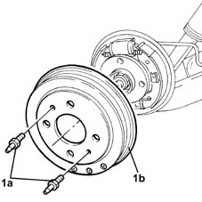
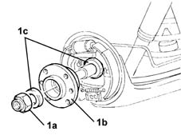
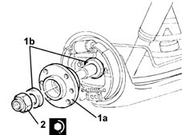

4450D10 hub of one rear wheel, l/h or r/h - r+r with wheel removed
- Path
- Procedures > 44 SUSPENSION AND WHEELS > 4450 WHEELS AND HUBS > 4450D rear wheel hubs > 4450D10 hub of one rear wheel, l/h or r/h - r+r with wheel removed
- Kind
- repair procedure (removal / refitting; the operation number is the code)
- Applies to
- all engines; all production periods
- Interactive page
- https://sloeber94.github.io/elrnDB-lYpsln/en/#/2429272
Applies to: all engines; all production periods
 Removing
Removing
 Refitting
RefittingProceed with removal 4450D70 hub cap of one rear wheel, l/h or r/h - r+r .
1. Undo the pins (1a) and remove the rear brake drum (1b).

Applies to: all engines; all production periods
1. Undo the nut (1a) and remove the rear wheel hub (1b) complete with spacers (1c).

Applies to: all engines; all production periods
Refitting
Removing1. Refit the rear wheel hub (1a) complete with spacers (1b).
2. Tighten the nut fixing the rear wheel hub to the recommended torque.
 | Fastening | Component | Ø | Value (daNm) |
|---|---|---|---|---|
2 | Nut | REAR WHEEL HUB WITH BEARINGS | M22 | 26.6 ÷ 29.4 |

Applies to: all engines; all production periods
Place the rear brake drum back in its housing and fix it tightening the pins to the recommended torque.
| Fastening | Component | Ø | Value (daNm) |
|---|---|---|---|---|
- | Pin | REAR BRAKE DRUM | M8 | (Wheel hub side) 1.0 ÷ 1.4 |
Proceed with refitting 4450D70 hub cap of one rear wheel, l/h or r/h - r+r .